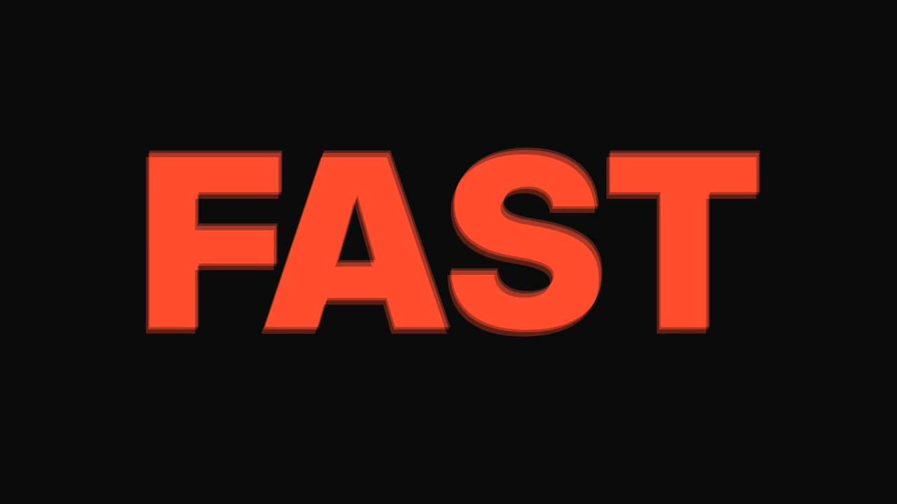
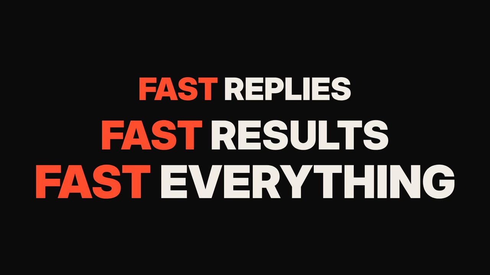
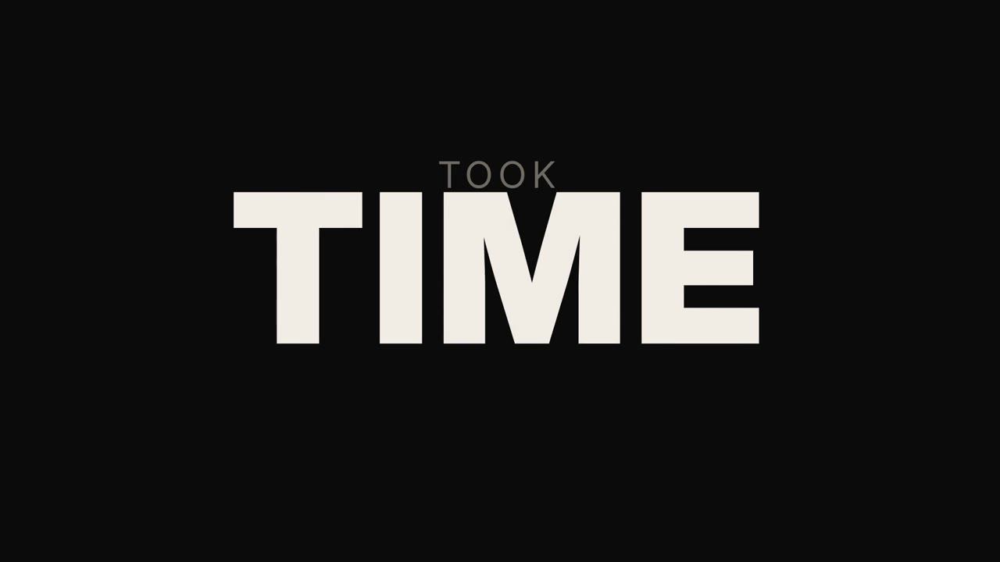
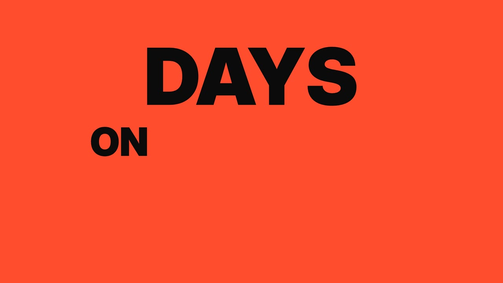
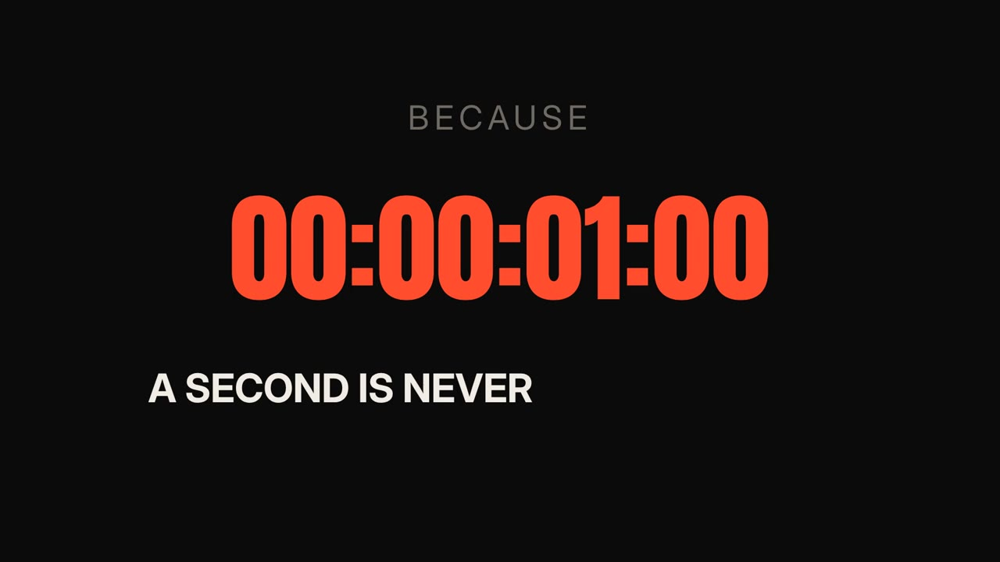
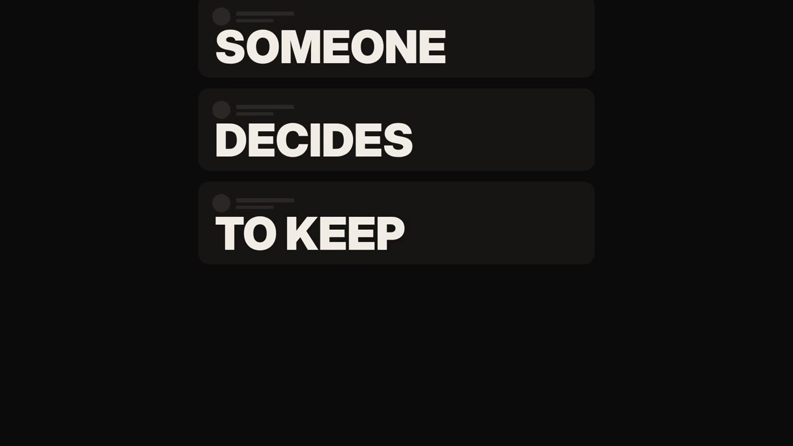

A spoken-word piece about patience in a fast world, set entirely in type. Every word lands on the voice.
Prove type skill and timing. Black, off-white and one accent colour, a single grotesk in three weights, original words in my own voice. Every word lands on the syllable. The 9:16 is re-composed, not cropped.
Words, voice, design, animation, sound.
Made in code: HTML canvas, frame-by-frame render · Every word timed to the voice by forced alignment · Original sound design
Self-initiated brief: Say It Slower is a fictional project made for this portfolio.





